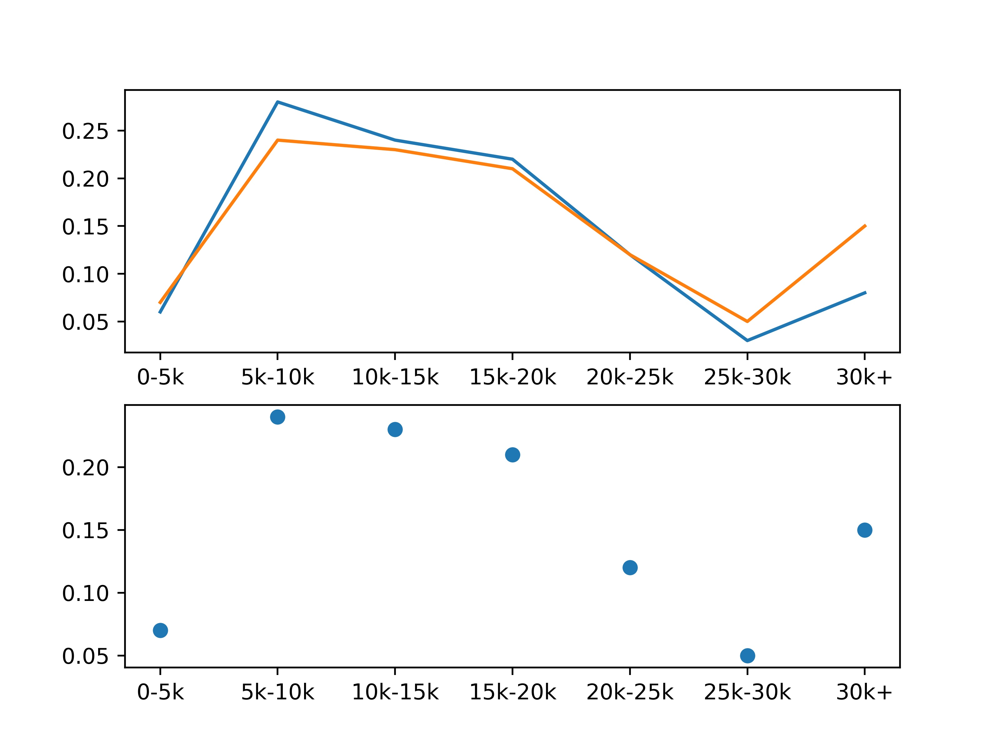

01
分析结果（公司类别）
现阶段北京IT工程师岗位在51job平台上招聘公司类别，以民营公司为主，岗位占大多数，而现阶段IT公司数量以民营公司为领导地位。
02
薪资占比
1、该图数据为所爬取的两个领域的薪资分布，横轴为薪资，纵轴数量为占比（由于数据总量不同，所以采用占比形式）；2、Python与Java的5k以下招聘数量较少，即此阶段岗位需求接近于饱和。30k薪资以上的招聘数量有上升趋势，说明当前市场高精尖人才仍较为紧缺，需求较大。
03
工作经验需求占比
1、该图为爬取数据的两个领域的工作经验要求数据占比图，左图为Python，右图Java;2、Python和Java岗位经验需求都是以3-4年经验为主，其次为2年和5年经验,但是Python对于经验的要求占比小于Java， 表现出Python现阶段的初级市场需求应大于Java；3、从图中可看出Python现阶段对于学历的要求要大于Java，当然一部分原因也是Python所涉及的到的相关领域在初级专业学习中未曾涉及；4、从四个学位 层次可以看出学历对于工作的影响也是较大的。